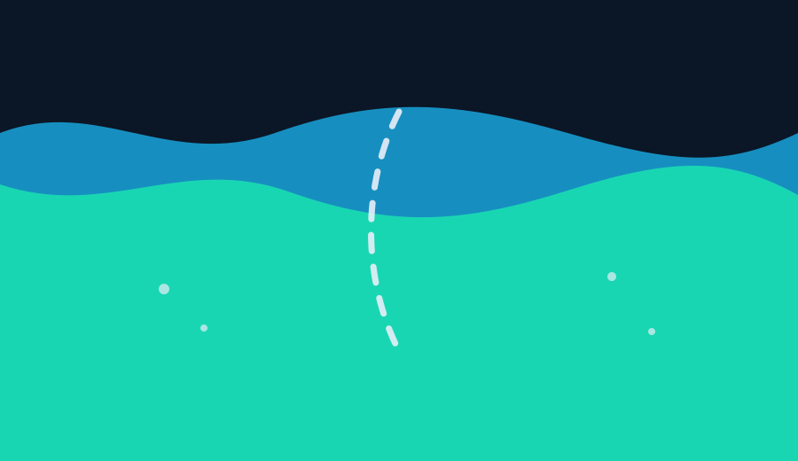
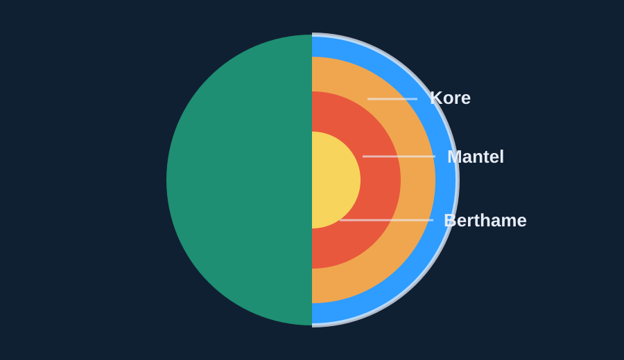

Çarjet e Tokës
Kurani betohet për Tokën “me çarje”. Kjo temë e lidh këtë me faktin se korja tokësore është plot thyerje, çarje dhe kufij pllakash që luajnë rol në dinamikën e planetit.
Lexo Artikullin12 tema të përzgjedhura.
Kurani betohet për Tokën “me çarje”. Kjo temë e lidh këtë me faktin se korja tokësore është plot thyerje, çarje dhe kufij pllakash që luajnë rol në dinamikën e planetit.
Lexo Artikullin
Për shekuj me radhë njerëzimi kishte teori mitologjike mbi burimet nëntokësore, derisa zbulimi i Ciklit të Ujit provoi saktësinë e deklaratave të Kuranit.
Lexo Artikullin
Një dukuri e padukshme për syrin njerëzor, oqeanografia moderne zbuloi "dallgët e thella nënujore", një pamje e vizatuar saktësisht në fjalët e Kuranit.
Lexo Artikullin
Zbulimi modern oqeanografik rreth barrierave të padukshme të kripësisë midis deteve është përshkruar në Kuran me detaje vizuale mahnitëse.
Lexo Artikullin
Kurani i quan erërat “pllenuese”, një shprehje që lidhet si me bartjen e polenit te bimët, ashtu edhe me rolin e grimcave të ajrit në formimin e reve dhe shiut.
Lexo Artikullin
Një pamje gjeologjike moderne që theu çdo besim të lashtë—malet thelbësisht nuk janë të palëvizshëm, por lundrojnë vazhdimisht ashtu si retë në qiell.
Lexo Artikullin
Gjeologjia moderne ka zbuluar se malet nuk janë thjesht ngritje sipërfaqësore, por kanë "rrënjë" masive nën tokë që veprojnë fiks si kunja stabilizuese. Kurani e ka deklaruar këtë fakt 14 shekuj më parë.
Lexo Artikullin
Artikulli e sheh ajetin për prishjen në tokë dhe në det si një paralajmërim ekologjik: dëmi që njeriu i shkakton mjedisit nuk mbetet jashtë tij, por kthehet si pasojë sociale, shëndetësore dhe natyrore.
Lexo Artikullin
Një profeci historike e shoqëruar me një detaj të frikshëm topografik: Kurani e identifikoi saktësisht basenin e Detit të Vdekur si pikën më të ulët në sipërfaqen e planetit.
Lexo Artikullin
Kurani përshkruan retë që shtyhen, bashkohen, grumbullohen dhe më pas nxjerrin shi. Ky rend i ngjan mënyrës si meteorologjia shpjegon formimin e reve të mëdha reshëse.
Lexo Artikullin
Zbulimet e fundit sizmiologjike përcaktuan se Toka ku jetojmë përbëhet saktësisht nga shtatë shtresa rrethore. Kurani e theksoi këtë detaj 14 shekuj përpara arritjes së shkencës moderne.
Lexo Artikullin
Kurani përshkruan tokën e tharë që, pas rënies së ujit, dridhet, fryhet dhe nxjerr bimësi. Artikulli e lexon këtë si një përshkrim të rendit fizik dhe biologjik që ndodh në tokë pas shiut.
Lexo Artikullin